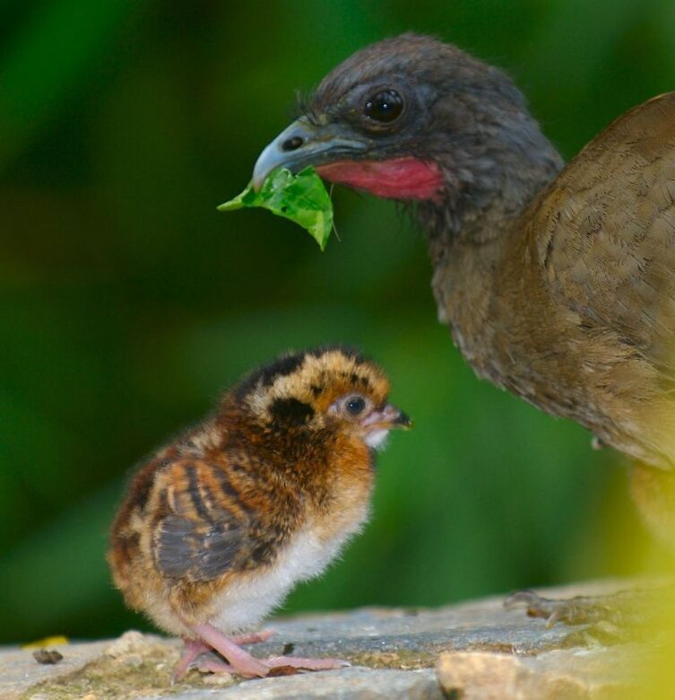
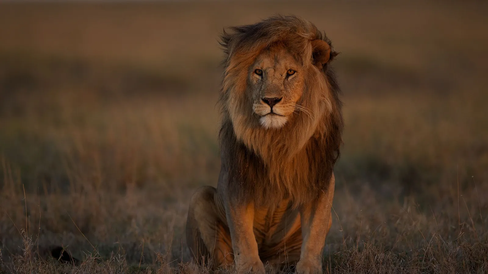
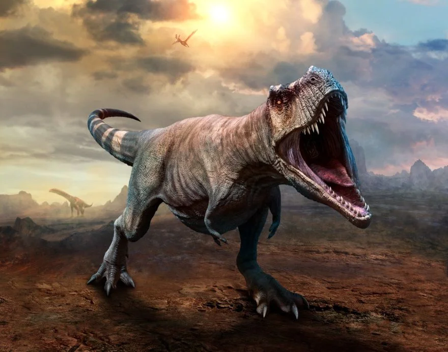
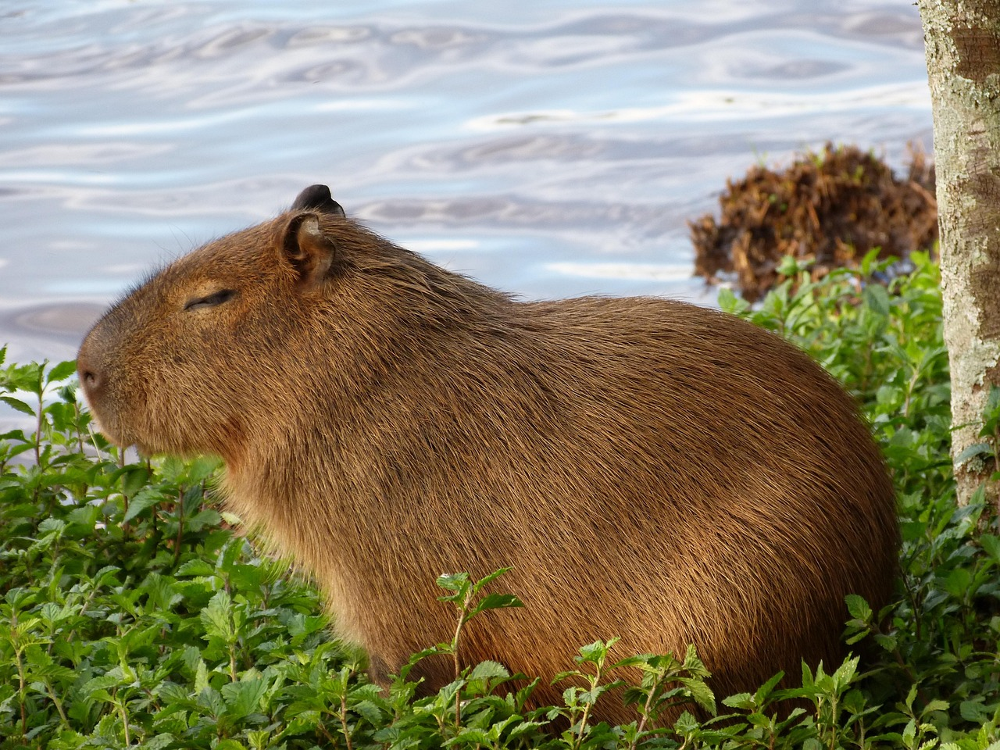
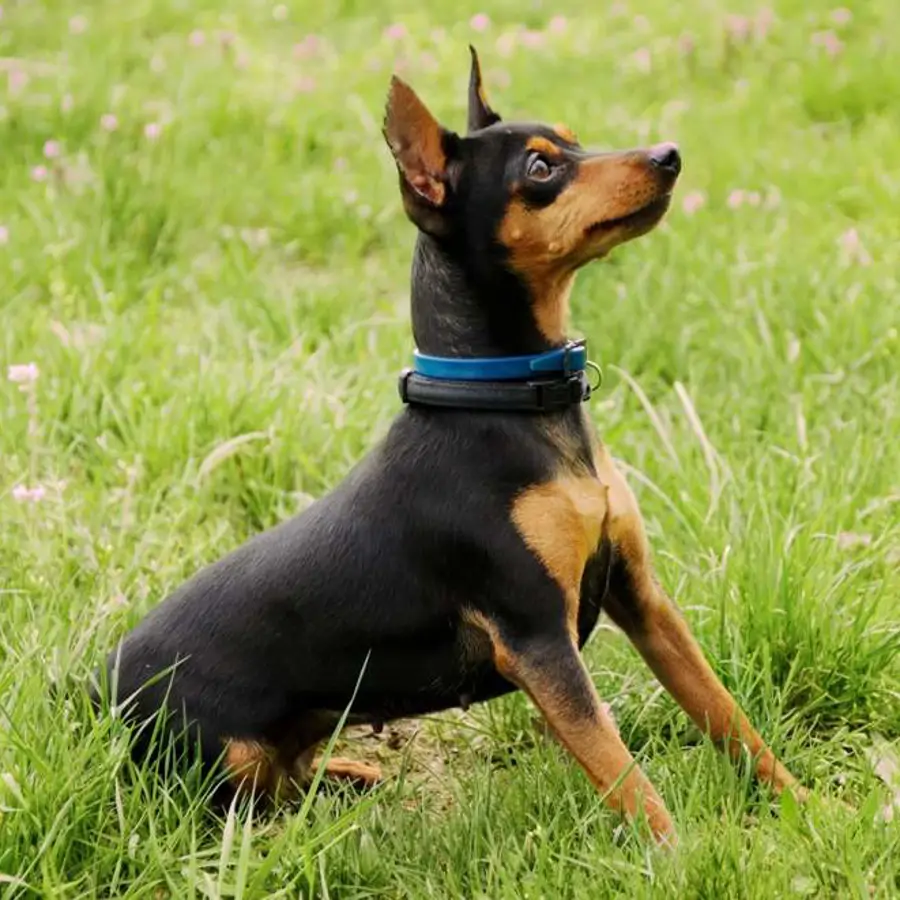

Pets
-

GuacharacaThe guacharaca (family Cracidae) is a galliform bird native to the tropical forests and rural areas of Colombia and Venezuela. This one is named Pedro — he was rescued after falling from a great height.
-

LionThe lion (Panthera leo) is a large cat and one of the most recognizable and iconic animals in the world.
-

T-RexTyrannosaurus rex, commonly known as T. rex, is an extinct theropod dinosaur that lived during the Cretaceous period, roughly 68 to 66 million years ago. It is one of the most well-known dinosaurs thanks to its massive size and reputation as an apex predator.
-

CatThe cat (Felis catus) is a carnivorous mammal of the feline family and one of the most popular and beloved domestic animals in the world.
-

CapybaraThe capybara (Hydrochoerus hydrochaeris) is the largest rodent in the world. It's a semi-aquatic animal that lives in groups in the wetlands of South America.
-

PinscherThe Pinscher is a small to medium-sized dog breed known for its distinctive appearance and loyal, energetic nature.